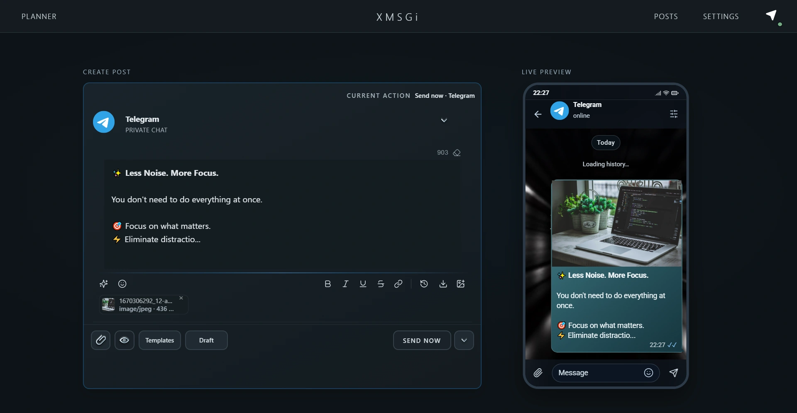

О проекте
Публикации в Telegram — в одном понятном рабочем пространстве
XMSGi Studio — настольное приложение для подготовки, планирования и отправки сообщений через ваш аккаунт Telegram. Проект объединяет редактор Studio и Quick Planner для быстрых публикаций, расписания и черновиков.

Кто создал XMSGi Studio
XMSGi Studio создан и развивается разработчиком Molodoy, который публикует проект под аккаунтом @molodoy01 на GitHub. Исходный код, документация и история изменений доступны в публичном репозитории.
Зачем появился проект
Проект вырос из желания сделать планирование публикаций менее громоздким и ближе к обычной работе в Telegram. Вместо разрозненных действий можно подготовить текст и медиа, проверить сообщение и решить, когда его отправить.
Цель — дать автору больше контроля над публикациями, а не заменить Telegram или навязать отдельный сервис для черновиков.
Какие задачи решает
- Создание и форматирование публикаций с медиа и другими вложениями.
- Предпросмотр сообщения и отправка в выбранные чаты, группы и каналы через ваш Telegram-аккаунт.
- Планирование публикаций на конкретное время и настройка повторов.
- Сохранение черновиков, шаблонов и истории, просмотр очереди, редактирование или отмена запланированной отправки.
Чем отличается от других инструментов
XMSGi Studio строится вокруг личного Telegram-аккаунта: для отправки не нужно создавать отдельного бота. Это настольное приложение, в котором подготовка публикаций, Quick Planner, очередь и черновики собраны вместе.
Черновики и рабочая сессия хранятся локально на устройстве; синхронизации черновиков через облако XMSGi Studio нет. Код проекта открыт под лицензией MIT, поэтому реализацию можно изучить и проверить.
Посмотрите, как устроена публикация
Узнайте о планировании постов или откройте репозиторий проекта с исходным кодом и документацией.